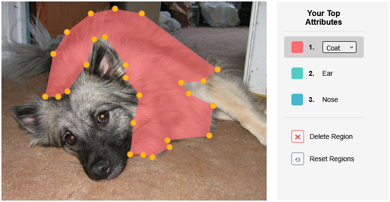

Effects of Providing End-User Feedback on User Perceptions of Human-in-the-Loop Systems
Establishing the effects of providing human-in-the-loop feedback on user perceptions and behavior in differing contexts, showing negative effects on trust and system perceptions when providing objective feedback and positive effects when providing reasoning-based feedback.
- Human-in-the-Loop ML
- Human-Factors Research
- Explainable AI